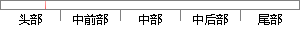

通用寄存器R0到R7是7种模式下共用的；
片段位置图

相似结果
相似片段：◆未分组寄存器r0"---r7 在所有的运行模式下,未...其中的一个是用户模式与系统模式共用,另外5个物理...中断和快中断7种模式,其中除用户模式外,其他均为他...
| 标题 | 《基于ARM和uC/OS-Ⅱ嵌入式平台的NAND Flash存储驱动系统设计》 |
| 对比库 | 中国学位论文全文数据库 |
| 作者 | 郑千洪 |
| 机构 | 西南交通大学 |
| 分类 | 光学工程 |
| 年份 | 2008 |
| 相似率 | 86.67% （严重抄袭） |